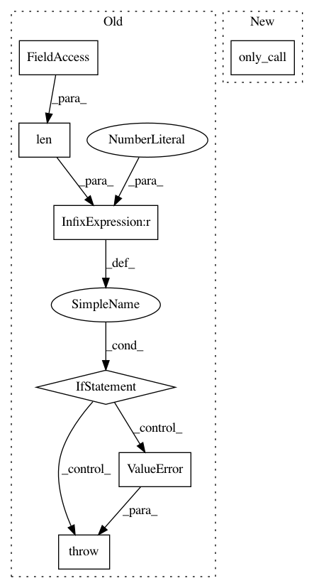

8c9c914ae2759f3731468e86e3a4f23a83be4cd1,deepvariant/postprocess_variants.py,,add_call_to_variant,#Any#Any#Any#Any#,256
Before Change
Raises:
ValueError: If variant doesn"t have exactly one variant.call record.
if len(variant.calls) != 1:
raise ValueError("Variant must have exactly one VariantCall record",
variant)
n_alleles = len(variant.alternate_bases) + 1
index, genotype = most_likely_genotype(predictions, n_alleles=n_alleles)
gq, variant.quality = compute_quals(predictions, index)
call = variant.calls[0]
After Change
Raises:
ValueError: If variant doesn"t have exactly one variant.call record.
call = variant_utils.only_call(variant)
n_alleles = len(variant.alternate_bases) + 1
index, genotype = most_likely_genotype(predictions, n_alleles=n_alleles)
gq, variant.quality = compute_quals(predictions, index)
call.call_set_name = sample_name
In pattern: SUPERPATTERN
Frequency: 3
Non-data size: 7
Instances
Project Name: google/deepvariant
Commit Name: 8c9c914ae2759f3731468e86e3a4f23a83be4cd1
Time: 2018-03-12
Author: cym@google.com
File Name: deepvariant/postprocess_variants.py
Class Name:
Method Name: add_call_to_variant
Project Name: google/deepvariant
Commit Name: bb621f07cb33b6e8ab46c3d7b6d51db7bd8dba68
Time: 2018-03-20
Author: cym@google.com
File Name: deepvariant/haplotypes.py
Class Name:
Method Name: _nonref_genotype_count
Project Name: google/deepvariant
Commit Name: 8c9c914ae2759f3731468e86e3a4f23a83be4cd1
Time: 2018-03-12
Author: cym@google.com
File Name: deepvariant/postprocess_variants.py
Class Name:
Method Name: _extract_single_sample_name